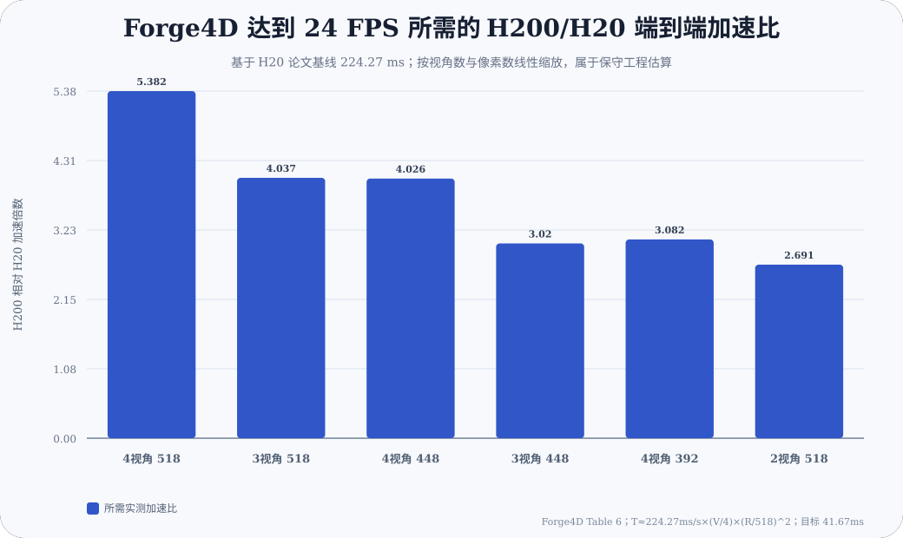

核心结论
关键证据
输入到底是不是多个视角
是。Forge4D 的输入是 n 路时间同步的 sparse-view videos；论文实验、公开 README 和 inference config 的默认值都是 4 路同步视角。每个时间点把四张图作为一个 view bundle 输入 VGGT-style backbone，然后沿时间维度用 state tokens 传递历史。
论文称输入不需要预先提供相机标定，但训练数据仍包含多相机监督。当前公开 demo 也仍读取数据集 extrinsics/intrinsics 做尺度计算和渲染，因此“非标定部署”与论文方法设计、当前代码实现需要分开看。
训练分辨率和论文速度测试均为每路 518×518。模型 patch size 为 14，因此如要降分辨率，优先选 14 的整数倍，例如 448、392、378，而不是随意用不能整除 patch 的尺寸。

论文速度口径：H20、4 路、518×518
Forge4D Table 6 的 full-model 延迟是 224.27 ms：关键帧重建 176.50 ms，motion prediction 47.77 ms，对应 4.45 FPS 的新状态更新率。补充 Table 11 明确写明速度测试使用 H20、4 张输入图、518×518。
24 FPS 意味着每组新观测的端到端延迟不超过 41.67 ms。因此原始 4×518² 配置需要 H200 相对 H20 达到 224.27/41.67≈5.38× 的真实端到端加速。
NVIDIA 官方 H200 SXM 规格是 1,979 BF16/FP16 TFLOPS（带结构化稀疏，dense 约一半）与 4.8 TB/s HBM；公开 H20 资料通常给出 148 BF16/FP16 TFLOPS、约 4.0 TB/s。也就是说理论 compute ceiling 足以超过 5.38×，但 memory-bandwidth ceiling 只有约 1.2×。Forge4D 同时包含 attention、DINO/DPT heads、motion head 和 gsplat，不能用峰值 TFLOPS 直接承诺端到端 5.38×。
事实与估算边界
达到 24 FPS 的候选配置
使用保守的一阶模型：T≈224.27ms/s×(V/4)×(R/518)²，其中 s 是 H200 相对 H20 的实际端到端加速。真实 global attention 会随 token 数超线性下降，因此减视角/分辨率有时会比该模型更快。
| 配置 | 所需 H200/H20 实测加速 | 论文质量证据 | 建议 |
|---|---|---|---|
| 4 views × 518² | ≥5.38× | 4-view PSNR 29.04 | 质量最好；只有实测接近 compute-bound 才能保证 24 FPS |
| 3 views × 518² | ≥4.04× | 3-view 未单独报告 | 质量优先的中间选择；先 benchmark |
| 2 views × 518² | ≥2.69× | 2-view PSNR 27.13，较 4-view −1.91 dB | 最有论文依据、最稳妥的 24 FPS 起测配置 |
| 4 views × 448² | ≥4.03× | 分辨率未消融；448=32×14 | 保留四视角，速度风险仍较高 |
| 3 views × 448² | ≥3.02× | 视角/分辨率均未联合消融 | 较均衡，但需要验证质量与 positional behavior |
| 4 views × 392² | ≥3.08× | 分辨率未消融；392=28×14 | 希望保留四视角时的建议起点 |
| 4 views × 378² | ≥2.87× | 分辨率未消融；378=27×14 | 若实测 H200 仅约 3×，比 392² 更安全 |

我建议怎么配
- 要最稳妥地冲 24 FPS： 先测 2 views × 518×518。这个视角数在论文中做过质量消融，且只要求 H200 相对 H20 实现 2.69× 端到端加速。代价是 PSNR 约下降 1.91 dB，并更容易缺少背面/遮挡区域。
- 必须保留四视角： 从 4 views × 392×392 起测；如果只有约 3× 加速则降到 378×378。分辨率变化未在论文训练中验证，建议在目标分辨率做短程 finetune。
- 质量优先并愿意优化内核： 3 views × 518×518 需要约 4.04×；4 views × 518×518 需要 5.38×。后者只有在 BF16/FP16、FlashAttention/xFormers、torch.compile/CUDA graph、异步 gsplat 和输入预处理都优化后才值得期待。
- 如果 24 FPS 只是显示帧率： 无需减少输入。论文在 H20、4×518² 下加入 10 个中间插值输出就达到 44.42 FPS；但交互控制与场景变化仍按 4.45 FPS 更新。
最短验证路径
局限与开放问题
- H200 上没有 Forge4D 官方实测；所有 24 FPS 配置门槛均为容量规划估算。
- 视角/像素线性模型忽略 global attention 的二次项、kernel launch、显存带宽、DPT head 和 rasterizer 的不同缩放规律。
- 论文只直接消融了 2/4/5 视角，未报告 3 视角；也未报告 448/392/378 分辨率的质量。
- 当前 Forge4D 公开仓库没有预训练 checkpoint，无法在本次调研中做 H200 实机 benchmark。
- 2-view 质量数字来自论文同一测试协议，不能代表所有遮挡、背面和快速人-物交互场景。
证据与推断边界
- 论文明示：4 路同步输入、518×518、H20、224.27 ms full model、2/4/5 view 质量消融。
- 硬件事实：H200 官方规格为 4.8 TB/s 和稀疏 BF16/FP16 1,979 TFLOPS；dense ceiling 约为其一半。
- 工程推断：2×518²、4×392² 等候选配置来自线性缩放模型，不是 Forge4D 作者结论。
- H200 是否能让 4×518² 达到 24 FPS，最终只能由当前软件栈的端到端 benchmark 决定。
来源与版本
核查时间：2026-11-10（Asia/Shanghai）。论文事实与 H200 容量估算已分开标注；未执行 H200 实机 benchmark。
- Forge4D paper — 输入、速度和视角消融
- Forge4D code — 公开配置默认 4 views / 518
- NVIDIA H200 specifications — 官方 TFLOPS、141GB 与 4.8TB/s
- FlashMLA-ETAP H20 discussion — 公开文献引用 H20 148 TFLOPS FP16
- Previous Forge4D selection report — 完整方法与代码核查已归档于本地上一份报告